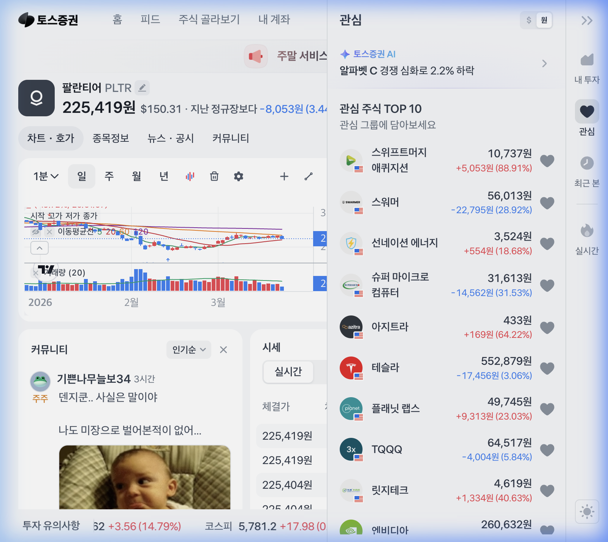

💎 한줄 결론
Rule of 40 score 118%, 미국 상업 매출 +115%, FCF 마진 57% — 소프트웨어 업계 역사상 전례 없는 효율성을 가이던스로 제시한 유일한 기업.
📊 핵심 KPI 대시보드 (2026 Guidance)
1. 기업 개요 — AI 운영체제의 탄생
팔란티어는 단순한 데이터 분석 기업이 아닙니다. 기업과 정부가 복잡한 데이터를 통합하여 '의사결정 프로세스'를 자동화할 수 있게 돕는 OS(Operating System) 공급자입니다. 2003년 Peter Thiel과 Alex Karp이 공동 창업하였으며, CIA의 투자 기관 In-Q-Tel로부터 초기 자금을 유치하여 국가 안보 영역에서 사업을 시작했습니다.
🛡️ Gotham (정부/국방)
전쟁 수행, 테러 방지 등 대규모 데이터를 활용한 국가 안보 플랫폼. Project Maven, ShipOS(미 해군) 등 미군의 핵심 의사결정 시스템에 통합.
🏭 Foundry (민간/기업)
제조, 금융, 헬스케어 등 방대한 공급망과 운영 데이터를 통합하는 기업용 OS. Airbus, BP, Merck 등 글로벌 기업이 핵심 운영 시스템으로 사용.
🚀 Apollo (배포)
클라우드, 온프레미스, 전장(戰場) 어디서나 소프트웨어를 끊김 없이 배포하고 관리하는 CI/CD 환경. 다른 SaaS와 차별화되는 핵심 인프라.
🧠 AIP (AI Platform)
거대언어모델(LLM)을 기업의 실제 데이터와 연결하여 분석을 넘어 '실행(Action)'까지 이끄는 최신 AI 플랫폼. 2025~2026년 성장의 핵심 엔진.
2. 기술적 위치 — 차트 분석

- 단기 추세: 현재 주가 $150.31로, 5일 이동평균선($152선)을 살짝 하향 이탈하며 단기 눌림목 구간에 진입했습니다.
- 이평선 배열: 주봉/월봉상 완벽한 정배열을 유지하고 있어 장기 추세는 여전히 매우 강력합니다.
- 이격도: 최근 $170 부근 고점 형성 후 5일선과의 이격을 줄이며 과열을 식히는 건강한 조정 과정으로 판단됩니다.
- 지지선: $145 (강력한 매물 지지대) → $135 (60일선 부근)
- 저항선: $170 (실망 매물벽 및 심리적 저항선) → $207.52 (52주 신고가)
3. 실적과 성장률 — 파괴적인 2026 가이던스
시장이 팔란티어의 '고평가'를 논할 때, 우리는 '압도적인 가이던스'를 봐야 합니다. 팔란티어는 2025년 한 해 동안 매출 56% 성장이라는 놀라운 실적을 기록했고, 2026년에는 오히려 성장이 가속화되고 있습니다.
| 지표 | FY2024 | FY2025 (실적) | FY2026 (가이던스) |
|---|---|---|---|
| 매출 | $2.87B | $4.475B (+56%) | $7.18~7.20B (+61%) |
| US Commercial | $0.70B | $1.465B (+109%) | $3.14B+ (+115%) |
| US Government | - | +75% YoY | 국방 AI 법안 $10B+ 수혜 |
| Adj. FCF | $0.79B | $2.27B (51% 마진) | $3.9~4.1B (57% 마진) |
| Rule of 40 | ~68% | ~107% (Q4: 127%) | 118% (가이던스) |
| EPS (Adj.) | $0.13 | $0.25 (Q4) | 시장 예상 상회 전망 |
Rule of 40은 매출 성장률(%)과 이익 마진(%)을 합산한 SaaS 기업의 건강도 지표입니다. 보통 40%만 넘어도 Top tier로 불리는데, 팔란티어는 그 세 배에 가까운 118%를 가이던스로 제시했습니다. 이는 '성장'과 '수익성'을 동시에 장악한 극히 희소한 기업임을 의미합니다.
4. 기술적 해자 — 온톨로지(Ontology)의 힘
팔란티어의 진짜 경쟁력은 AI 모델이나 알고리즘이 아닙니다. 그것은 'Ontology(온톨로지)'입니다.
- 디지털 트윈 구축: 고객사의 복잡한 운영 데이터(자산, 프로세스, 사람 사이의 관계)를 Ontology라는 생태계로 통합합니다. 이는 단순 데이터베이스가 아니라, 기업의 '디지털 두뇌' 그 자체입니다.
- 천문학적 전환 비용: 일단 팔란티어 위에 기업 시스템이 올라가면, 이를 다른 플랫폼으로 옮기는 것 자체가 불가능에 가까운 비용을 발생시킵니다. NDR 139%가 이를 증명합니다.
- AI의 '실행': 타 BI 툴(Tableau, Power BI)은 데이터를 보여주기만 합니다. 팔란티어의 AIP는 Ontology 위에서 AI가 "재고가 부족하니 주문해라" 같은 실제 비즈니스 행동을 정확하게 수행하게 합니다.
데이터 통합
Foundry/Gotham으로 수집
Ontology 구축
디지털 트윈 생성
AIP 연결
LLM + 기업 데이터
실행(Action)
자동화된 의사결정
5. AIP Bootcamp — 저항 없는 도입 전략
팔란티어의 AIP Bootcamp는 기존 엔터프라이즈 소프트웨어 도입의 패러다임을 뒤집은 혁신적인 영업 전략입니다.
- 도입 속도 혁명: 기존 수 개월 걸리던 PoC(Proof of Concept) 과정을 5일간의 집중 부트캠프로 대체. 고객이 며칠 만에 실질적인 비즈니스 가치를 체감하게 합니다.
- Land and Expand: 작은 프로젝트로 시작하여 전사적으로 확대하는 전략. 마케팅 비용을 줄이면서도 계약 규모를 기하급수적으로 키웁니다.
- AIPCon 9 (2026.03): 2026년 3월 개최된 AIPCon 9에서는 미 해군 ShipOS, Project Maven, 에너지·헬스케어 분야 등 다양한 섹터에서의 실전 배치 사례가 공개되었습니다.
- Federal AI Deployment Act: 2026년 초 통과된 이 법안은 미국 정부 워크플로우에 AI를 통합하기 위해 $10B+ 이상을 배정. 팔란티어는 핵심 수혜자입니다.
6. 거버넌스 — 창업주 중심의 강력한 지배구조
팔란티어의 거버넌스는 일반적인 빅테크와 다릅니다. 이 구조가 투자자에게 양날의 검이 되는 이유를 이해해야 합니다.
- Class F Shares (Founder Shares): Alex Karp, Peter Thiel, Stephen Cohen 등 창업자 그룹이 강력한 의결권을 보유. 외부 행동주의 투자자의 단기 수익 실현 압박으로부터 완전히 자유롭습니다.
- 장기 프로젝트 추진력: 이 구조 덕분에 'Sovereign AI'처럼 당장 수익으로 이어지지 않더라도 국가 안보와 직결된 장기 프로젝트에 집중할 수 있습니다. 이것이 변동성 장세에서 전문 투자자들이 팔란티어를 신뢰하는 핵심 이유입니다.
- SBC(주식보상비용) 통제: 과거 가장 큰 리스크였던 SBC 비중이 매출 대비 급격히 감소하며 GAAP 기준 10분기 연속 흑자를 달성. S&P 500 편입 이후 기관들의 패시브 자금이 안정적으로 유입되고 있습니다.
"팔란티어는 '세대적 프로젝트(Generational Project)'입니다. 우리의 임무는 서방 세계의 기술적 우위를 지키고, AI가 실제 세계에서 올바르게 작동하도록 만드는 것입니다."
7. 밸류에이션 — 비싼가, 프리미엄이 정당한가?
| 지표 | PLTR | CrowdStrike | ServiceNow |
|---|---|---|---|
| Forward P/E | ~82.5x | ~68x | ~55x |
| P/S (TTM) | ~44x | ~22x | ~18x |
| 매출 성장률 | +61% | +28% | +22% |
| Rule of 40 | 118% | ~52% | ~50% |
| FCF Margin | 57% | ~30% | ~31% |
숫자만 보면 가장 비싸 보이지만, 성장률과 효율성을 함께 보면 팔란티어의 프리미엄은 충분히 정당화됩니다. 가장 높은 Rule of 40, 가장 높은 FCF 마진, 가장 높은 성장률을 동시에 보유한 유일한 기업입니다.
애널리스트 타겟 프라이스 (2026.03 기준)
- UBS: $200 (Buy)
- Rosenblatt: $200 (Buy)
- Wedbush: $230 (Outperform)
- Citigroup: $260 (Buy)
- 컨센서스 중앙값: $202.5 (16명 애널리스트)
8. 리스크 — 반드시 알아야 할 하방 요인
- 국제 사업 둔화: 미국 외 지역(유럽, 아시아)에서의 침투 속도가 상대적으로 느림. 특히 NHS 영국 계약 논란($330M)은 투자 심리에 부정적.
- 내부자 매도: 경영진의 스톡옵션 행사 및 정기적 매도 물량이 단기적 오버행 이슈로 작용할 수 있음.
- 금리 민감도: 고성장 기술주 특성상 금리 인하 지연 시 밸류에이션 멀티플 압축 가능.
- 경쟁 심화: Snowflake, Databricks 등의 AI 플랫폼 경쟁이 가속화되고 있으나, Ontology 기반의 해자는 여전히 다른 차원.
9. 투자 판단 — 평단가 $166.51 분석
📈 Bull Case ($230~$260)
- AIP 매출 비중이 전체의 50%를 넘어서고, 2026년 가이던스 $7.2B를 상회할 경우
- Federal AI Deployment Act로 미 정부 매출 폭발적 성장
- 국제 사업 반등 (일본, 한국, 중동 시장 확대)
📉 Bear Case ($135~$145)
- 금리 인하 지연 및 매크로 악화 시 성장주 전반의 밸류에이션 축소
- 국제 사업 부진 지속 + 내부자 매도 가속화
- AI 산업 전반의 버블 논란 심화
동영님의 평단가 $166.51은 현재 주가 대비 약 10% 미만의 손실 구간입니다.
그러나 2026년 가이던스(61% 성장, Rule of 40: 118%)와 애널리스트 컨센서스($200+)를 고려하면, 이 가격은 '미래 가치 대비 할인된 구간'입니다.
전략: $145~148 구간의 강력한 지지선을 활용한 분할 매수(Averaging Down)로 평단을 낮추고, 2026년 하반기 실적 시즌을 기다리십시오. 팔란티어의 '시간을 내 편으로 만드는' 온톨로지 해자는 단기 노이즈를 압도할 것입니다.
"가이던스는 거짓말을 하지 않습니다. 팔란티어의 진가는 이제 막 드러나기 시작했습니다."